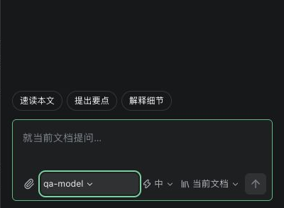
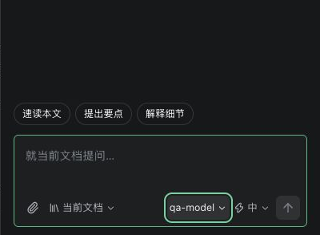
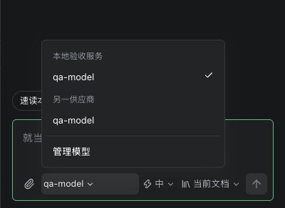
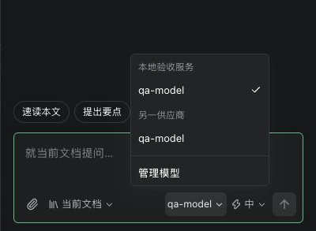
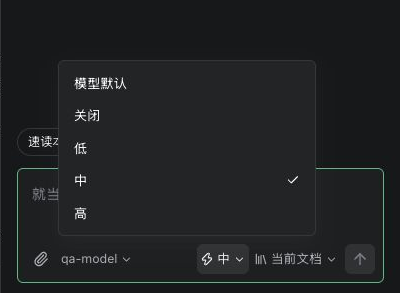
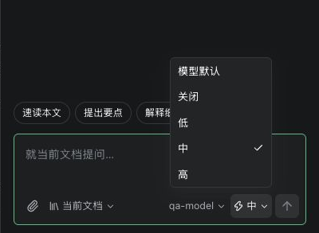
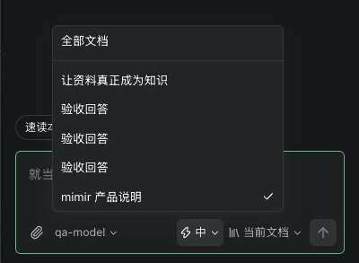
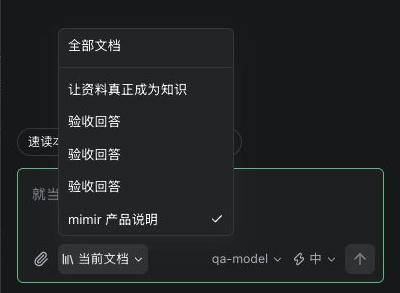

左侧：附件、知识库范围。右侧：模型、思考强度、发送。模型触发器按内容收缩，菜单去掉外围留白，选中标记预留位置。
真实产品截图的局部预览；点击查看完整原图。菜单最初共用 258px；当前短列表为 176px，思考强度为 128px。长内容可增长至容器限定上限。








下列场景使用生产 ChatPanel 与当前主题，固定长名称和内存 IO，不连接真实模型。
实际尺寸与键盘验证记录 · 质量检查说明